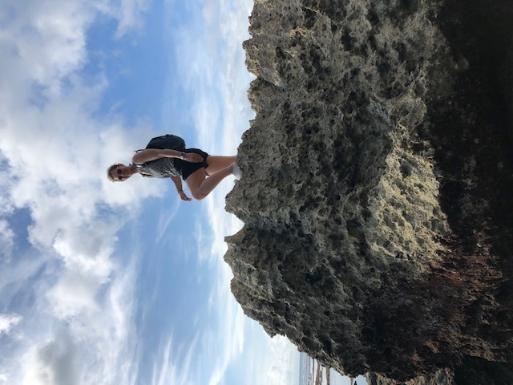

Wie ben ik? Mijn naam is Lindi en ik ben 32 jaar. Leren is mijn passie en
daarom ben ik altijd bezig om mijn kennis uit te breiden.
Ik hou van routine en mijn huis en leven probeer ik zo georganiseerd mogelijk
te houden. Dit betekent zeker niet dat ik van saai hou. Samen met mijn man
en 2 konijntjes is er altijd wel wat te beleven.
Mijn man en ik houden bijvoorbeeld van reizen. Ons lievelingsland is Indonesië
en ik haal er veel plezier uit om ook daar mijn leergierigheid in te zetten
om zoveel mogelijk van de taal te leren.
